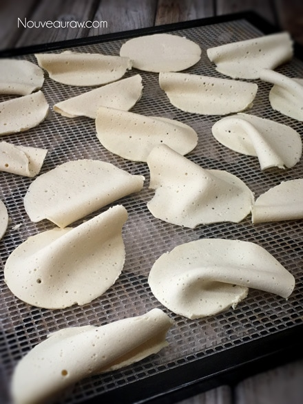
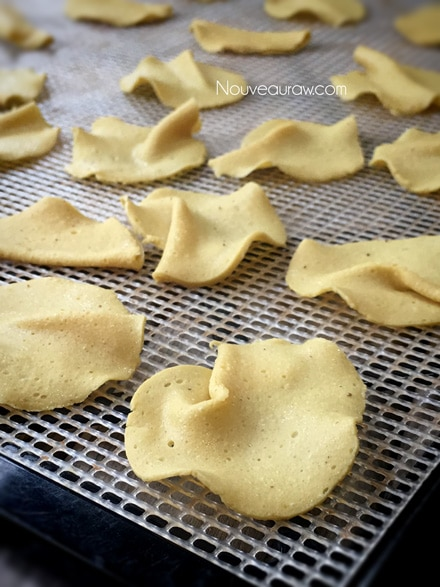

“Mozzarella Cheese” Chips
~ vegan, gluten-free, grain-free ~
I have been practicing this form of “cheese chip” making for a few years now. I stumbled upon it when I found myself with an excess of vegan (agar) cheeses in my fridge and feared that they would go bad before they were all consumed.
I love to experiment, so I decided to slice some of the cheese very thin and then dehydrate it. It turned into a fantastic chip that blew away all my expectations.
These fantastic chips have a nice deep color, a crispy texture, and the flavor seems to become more concentrated. I use a mandolin that creates extra thin slices, much like (this) one.
To add visual interest to the chips, I slice the cheese over the top of the dehydrator tray and let them drop and then dry however they land. This adds curled edges, folds and crevasses just like you see in commercially fried chips. Just make sure they are in a single layer when drying. I highly recommend the Excalibur dehydrator! If you don’t own one, it is well worth the investment as it will open the doors to a whole new culinary experience.
One other quick tip that I will share is to make sure you use a mold (container) that isn’t any wider than the mandolin that you plan on using. This is especially if you want to make round chips. Otherwise, you can just cut the cheese to the right width.
Ok, before you go running into your kitchen I have one more thing to share…. be sure to keep them stored in an airtight container, as any humidity will cause them to start softening. If that happens, you can toss them back in the dehydrator to crisp up. I hope you enjoy this recipe and I look forward to your comments below. Blessings and joy, amie sue
- 1 cup (112 g) cashews, soaked
- 3/4 cup water
- 1/4 cup nutritional yeast
- 2 Tbsp raw coconut vinegar
- 1 tbsp onion powder
- 1 tsp smoked salt
- 1/2 tsp garlic powder
Agar gel:
Preparation:
- Place the cashews in a glass bowl, along with 4 cups of water.
- The soaking process will help reduce phytic acid, which aids digestion.
- The soaking also softens the cashews, so they blend nice and creamy.
- After the cashews are through soaking, drain and rinse.
- In a high-powered blender combine the; cashews, water, nutritional yeast, vinegar, onion, smoked salt and garlic powder. Blend until creamy and smooth.
- Due to the volume and the creamy texture that we are going after, it is important to use a high-powered blender. It could be too taxing on a lower-end model.
- Blend until the batter is creamy smooth. You shouldn’t detect any grit. If you do, keep blending.
- This process can take 2-4 minutes, depending on the power of the blender. Keep your hand cupped around the base of the blender carafe to feel for warmth. If the batter is getting too warm, stop the machine and let it cool. Then proceed once cooled.
- In a small saucepan whisk together 3/4 cup of water and the agar.
- Let it sit for a few minutes.
- Bring to a boil for about one minute, stirring constantly. Reduce the heat and simmer for about 5 minutes, constantly stirring until the agar is dissolved completely.
- Start the blender creating a vortex, CAREFULLY add the agar gel and blend just long enough to incorporate everything together. Don’t over process. The batter will start to thicken.
- Be careful that the liquid doesn’t splatter, hitting your skin.
- What is a vortex? Look into the container from the top and slowly increase the speed from low to high, the batter will form a small vortex (or hole) in the center. High-powered machines have containers that are designed to create a controlled vortex, systematically folding ingredients back to the blades for smoother blends and faster processing… instead of just spinning ingredients around, hoping they find their way to the blades.
- If your machine isn’t powerful enough or built to do this, you may need to stop the unit often to scrape the sides down.
- Pour the mixture into the mold of choice. A long cylinder shape works great.
- Once firm, using a mandolin, create thin slices and place them on the mesh sheet that comes with the dehydrator. I like to just plop them on the screen, rather than laying them perfectly flat… so that they resemble chips.
- Sprinkle Himalayan pink salt on top.
- Dehydrate at 115 degrees (F) for 6-10 hours or until crispy.
- Store in an airtight container on the counter for 5-7 days (?)… they get eaten so quickly that I am really not too sure.

Amazing how the color changed after they were dehydrated.
Remember how I mentioned above that I like just to let the
chips fall where they may, thus creating crinkly chips? The photo
gives you a good idea as to what I was talking about.

© AmieSue.com